Rackside — every screen
v330 · auto-captured by the app's Playwright tour (iPhone 13, seeded mid-block data).
Companion docs: FEATURES.md (what it does) ·
FUNCTIONS.md (where the code lives). Regenerate any time — the tour script reseeds and reshoots.
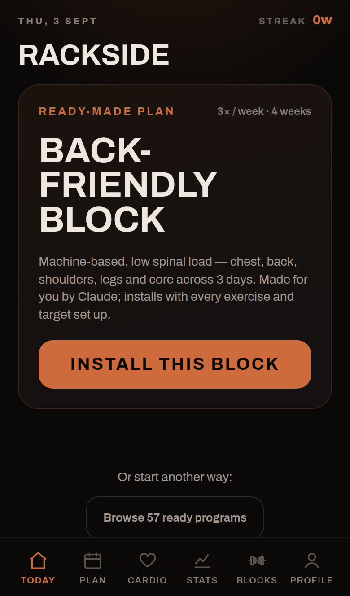
01 Today · first run — starter block + empty-state doors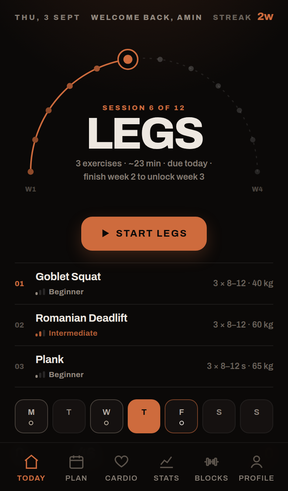
02 Today · greeting, week strip, progress arc, next session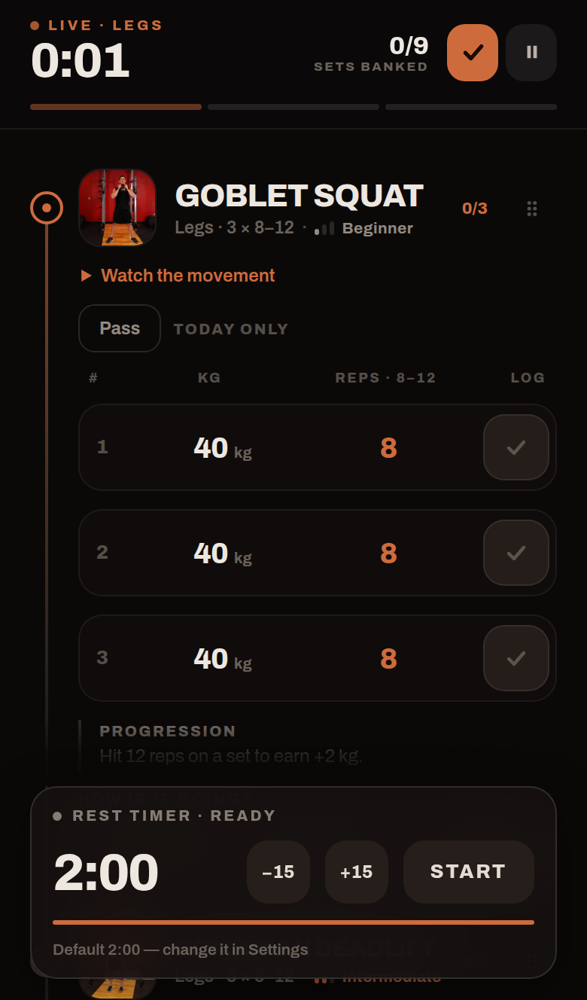
03 Live workout · exercise rail, weight ruler, reps strip04 Pause · freeze or discard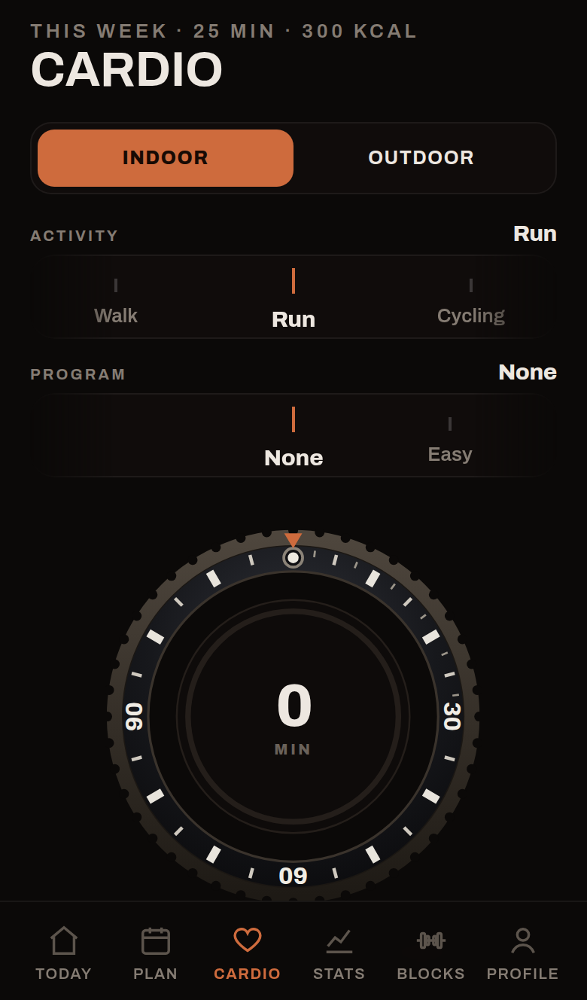
05 Cardio · activity + program rails, the watch at zero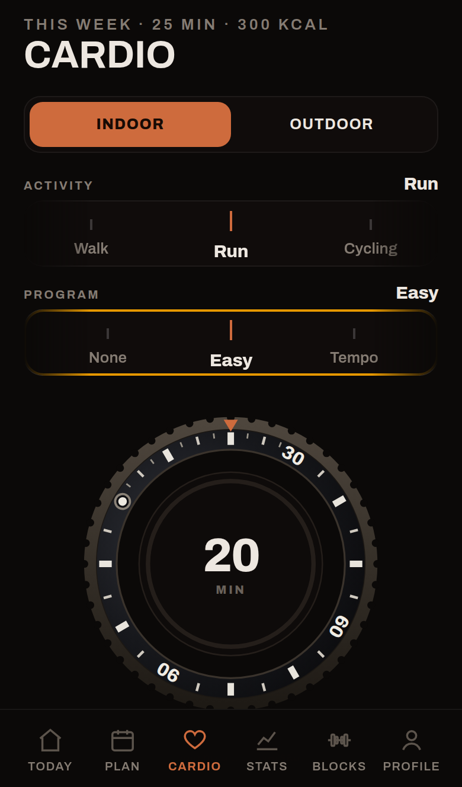
06 Cardio · program picked — bezel turned to its minutes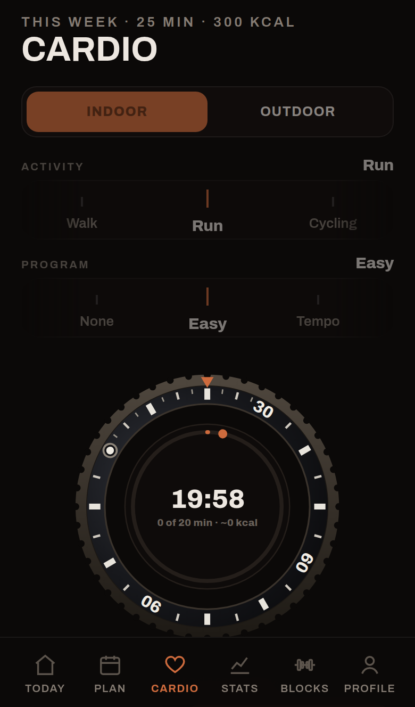
07 Cardio · running — inner dial, orbit dot, progress ring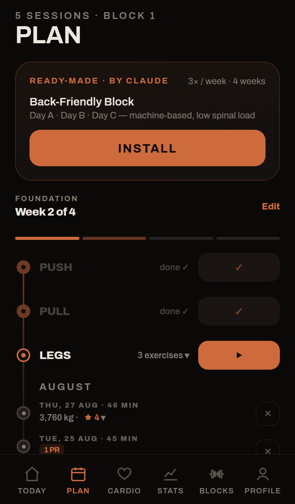
08 Plan · the block on one rail — days and history share it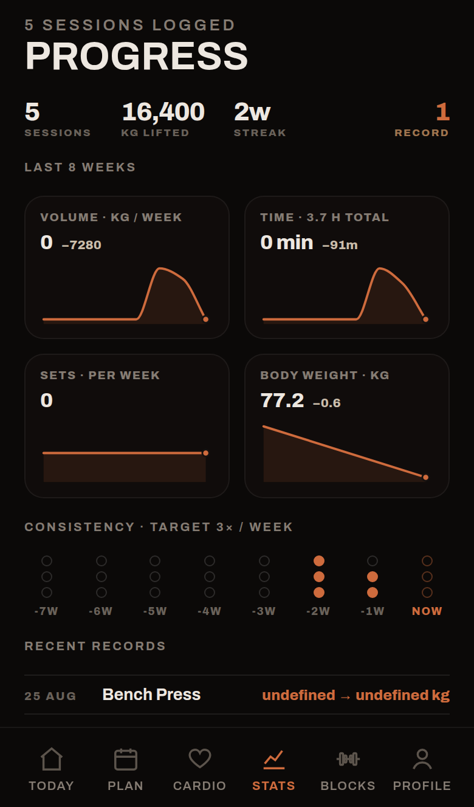
09 Stats · volume, trends, records, body weight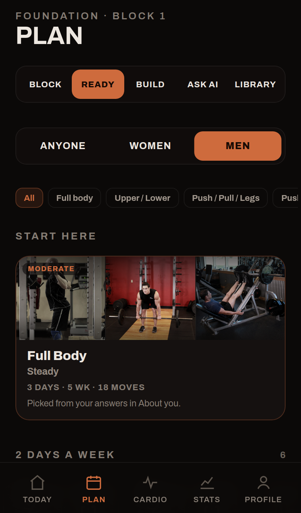
10 Blocks · ready-program shelves / start a block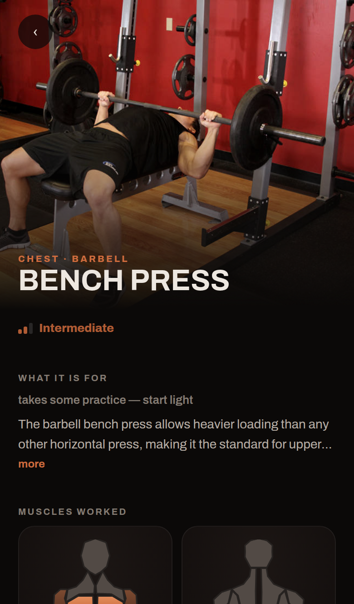
11 Exercise detail · demo, history, PRs, muscle panel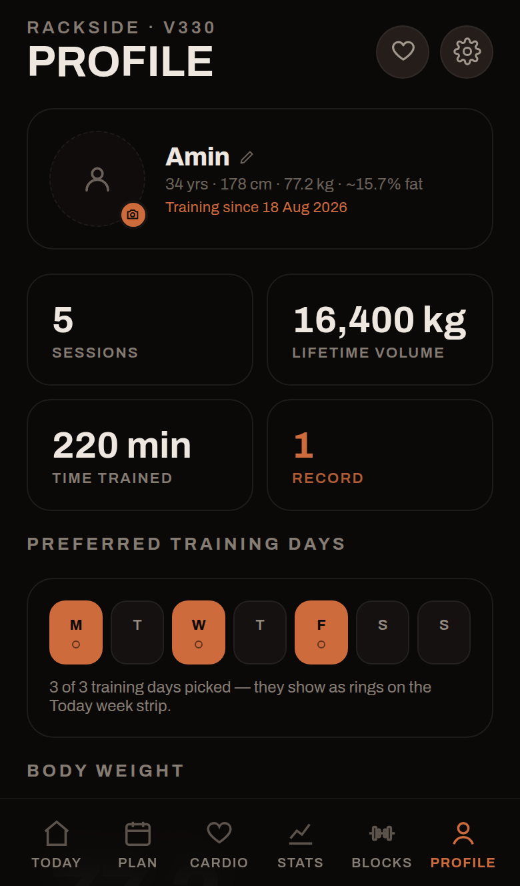
12 Profile · identity card, lifetime stats, body weight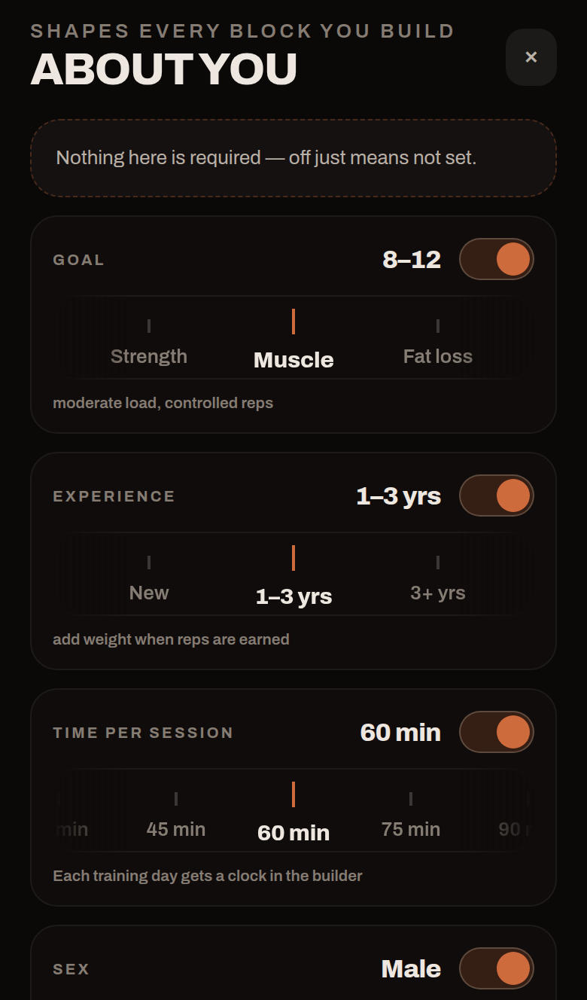
13 About you · goal, level, born wheels, tape measures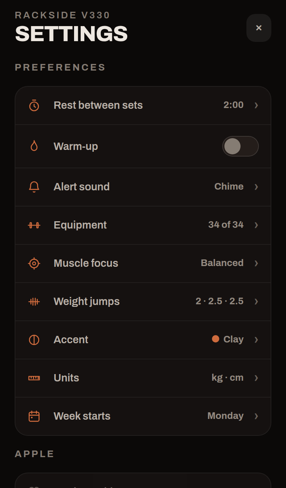
14 Settings · one page, drafts commit on Save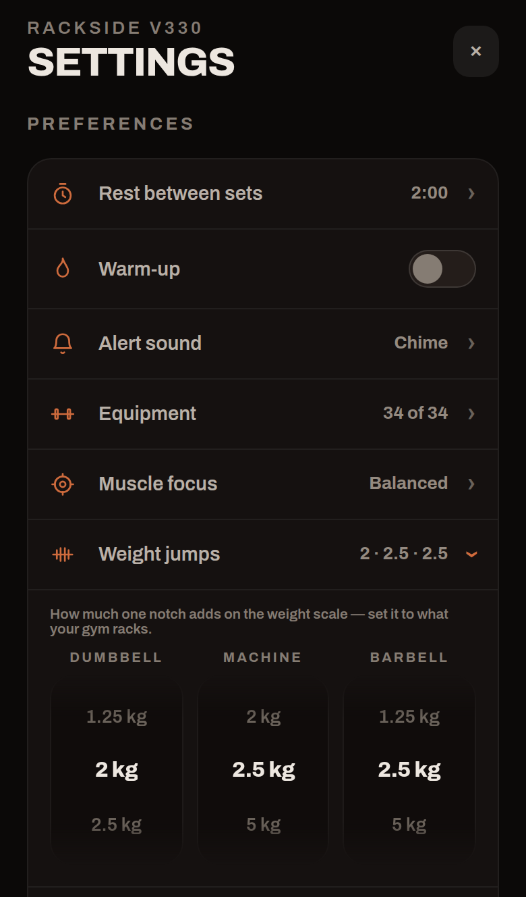
15 Weight jumps · three wheels, real rack steps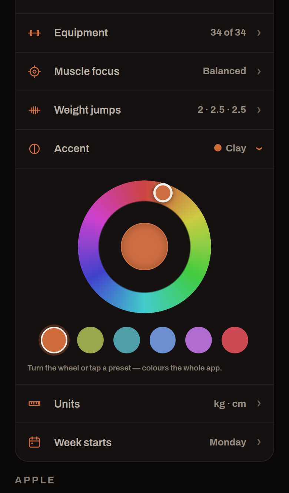
16 Accent · hue wheel + presets, recolours everything live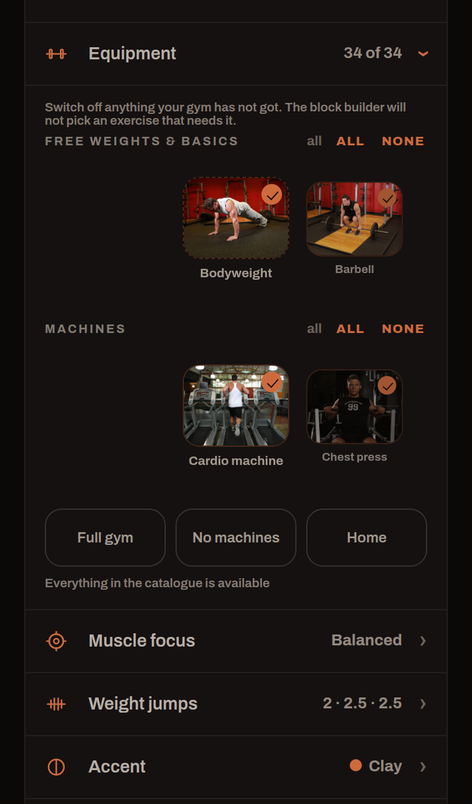
17 Equipment · photo rails, tick all / untick all